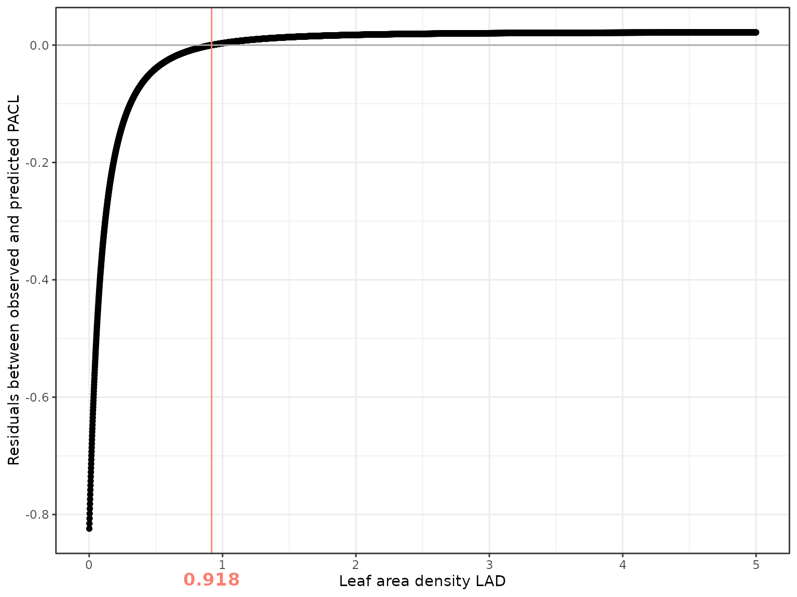
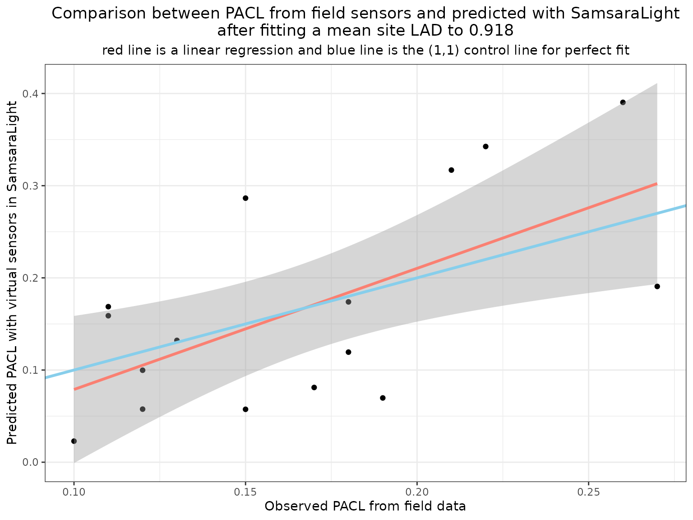

Calibrate the LAD parameter
Source:vignettes/web_only/5b-virtual_sensors_lad.Rmd
5b-virtual_sensors_lad.RmdIntroduction
In the previous vignettes, we examined how virtual sensors can be implemented in the stand to estimate light arriving on the ground. Virtual sensors can be used to calibrate crown parameters by minimizing the discrepancy between observed and simulated light.
In this vignette, we illustrate a simple approach to calibrate the tree leaf area density (LAD), based on a grid search over LAD values.
Initialise the stand
Here, we will estimate a mean-site LAD on the Cloture dataset, the one we used previously with sensors by fixing a LAD at 0.5m2/m3.
stand_cloture <- SamsaRaLight::create_sl_stand(
# Tree inventory
trees_inv = SamsaRaLight::data_cloture20$trees,
core_polygon_df = SamsaRaLight::data_cloture20$core_polygon,
# STand geometry
cell_size = 5,
latitude = SamsaRaLight::data_cloture20$info$latitude,
slope = SamsaRaLight::data_cloture20$info$slope,
aspect = SamsaRaLight::data_cloture20$info$aspect,
north2x = SamsaRaLight::data_cloture20$info$north2x,
# Define sensors
sensors = SamsaRaLight::data_cloture20$sensors
)
#> SamsaRaLight stand successfully created.Running a batch of simulations
We run a series of simulations in which all trees are assigned the same LAD value, spanning a wide range.
LADs <- seq(0.001, 5, by = 0.001)For each simulation, we: - Run the model using
sensors_only = TRUE to fasten drastically the computation
time, - Extract predicted PACL at sensor locations, - Compute the mean
residual between observed and predicted values.
# Here, it is heavy computations, thus load precomputed data that have been created as above
out_residuals <- readRDS(
system.file(
"extdata",
"vignette_5_results.rds",
package = "SamsaRaLight"
)
)
# ---- PRECOMPUTED DATA SCRIPT ----
# out_residuals <- vector("list", length(LADs))
# i <- 0
#
# time_start <- Sys.time()
#
# for (lad in LADs) {
#
# print(lad)
# i <- i+1
#
# # Set the tested LAD value
# tmp_stand <- stand_cloture
#
# tmp_stand$trees <- tmp_stand$trees %>%
# dplyr::mutate(crown_lad = lad)
#
#
# # Run SamsaraLight
# out_sensors_calib <- SamsaRaLight::run_sl(
#
# sl_stand = tmp_stand,
# monthly_rad = SamsaRaLight::data_cloture20$radiations,
# parallel_mode = TRUE,
# verbose = FALSE,
#
# sensors_only = TRUE # Here important because we run lot of simulations
# )
#
#
# # Compute the mean residuals
# out_residuals[[i]] <-
#
# dplyr::left_join(
#
# SamsaRaLight::data_cloture20$sensors %>%
# dplyr::select(id_sensor, pacl) %>%
# dplyr::rename_at(vars(-"id_sensor"), ~paste0(., "_obs")),
#
# out_sensors_calib$output$light$sensors %>%
# dplyr::select(id_sensor, pacl) %>%
# dplyr::rename_at(vars(-"id_sensor"), ~paste0(., "_pred")),
# by = "id_sensor"
#
# ) %>%
#
# dplyr::mutate(
# res = pacl_obs - pacl_pred
# ) %>%
#
# dplyr::summarise(res = mean(res)) %>%
# dplyr::mutate(lad = lad, .before = res)
# }
#
# time_end <- Sys.time()
# time_elapsed <- time_end - time_start
#
# out_residuals <- dplyr::bind_rows(out_residuals)Identifying the optimal LAD
The optimal LAD is defined here as the value minimizing the absolute mean residual:
The following figure shows how residuals vary with LAD. The vertical line indicates the best-fitting value.
ggplot(out_residuals, aes(y = res, x = lad)) +
geom_point() +
geom_hline(yintercept = 0, color = "darkgray") +
geom_vline(xintercept = best_lad, color = "salmon") +
annotation_custom(textGrob(as.character(best_lad),
gp=gpar(fontsize=13, fontface="bold",
col = "salmon")) ,
xmin=best_lad, xmax=best_lad,
ymin=-0.97, ymax=-0.85) +
coord_cartesian(clip = "off") +
theme_bw() +
ylab("Residuals between observed and predicted PACL") +
xlab("Leaf area density LAD")
In this example, the optimal LAD is 0.918, confirming that we underestimated LAD value, but showing that 0.5 was quite low for this site.
PACL residuals decrease strongly up to an LAD of about 0.5 and then reach a plateau beyond 1. This indicates that prediction errors are larger at low LAD values, whereas at high LAD light interception is mainly controlled by crown geometry, with limited sensitivity to further increases in foliage density.
Evaluating the calibrated model
We now rerun the simulation using the calibrated LAD value and compare predicted and observed PACL.
Set best LAD values to all trees LAD values
trees_inv_bestlad <- SamsaRaLight::data_cloture20$trees %>%
dplyr::mutate(crown_lad = best_lad)Initialise the stand and run SamsaRaLight
stand_cloture_bestlad <- SamsaRaLight::create_sl_stand(
# Tree inventory
trees_inv = trees_inv_bestlad,
core_polygon_df = SamsaRaLight::data_cloture20$core_polygon,
# STand geometry
cell_size = 5,
latitude = SamsaRaLight::data_cloture20$info$latitude,
slope = SamsaRaLight::data_cloture20$info$slope,
aspect = SamsaRaLight::data_cloture20$info$aspect,
north2x = SamsaRaLight::data_cloture20$info$north2x,
# Define sensors
sensors = SamsaRaLight::data_cloture20$sensors
)
#> SamsaRaLight stand successfully created.
out_cloture_bestlad <- SamsaRaLight::run_sl(
sl_stand = stand_cloture_bestlad,
monthly_radiations = SamsaRaLight::data_cloture20$radiations,
detailed_output = TRUE,
sensors_only = FALSE
)
#> parallel mode disabled because OpenMP was not available
#> SamsaRaLight simulation was run successfully.Compare PACL values
dplyr::left_join(
SamsaRaLight::data_cloture20$sensors %>%
dplyr::select(id_sensor, pacl) %>%
dplyr::rename_at(vars(-"id_sensor"), ~paste0(., "_obs")),
out_cloture_bestlad$output$light$sensors %>%
dplyr::select(id_sensor, pacl) %>%
dplyr::rename_at(vars(-"id_sensor"), ~paste0(., "_pred")),
by = "id_sensor"
) %>%
dplyr::mutate(
diff_pacl = pacl_obs - pacl_pred
) %>%
ggplot(aes(y = pacl_pred, x = pacl_obs)) +
geom_point() +
geom_smooth(method = "lm", formula = y ~ x, color = "salmon", linewidth = 1.1) +
geom_abline(intercept = 0, slope = 1, color = "skyblue", linewidth = 1.1) +
xlab("Observed PACL from field data") +
ylab("Predicted PACL with virtual sensors in SamsaraLight") +
labs(title = paste0("Comparison between PACL from field sensors and predicted with SamsaraLight\nafter fitting a mean site LAD to ", best_lad),
subtitle = "red line is a linear regression and blue line is the (1,1) control line for perfect fit") +
theme_bw() +
theme(plot.title = element_text(hjust = 0.5),
plot.subtitle = element_text(hjust = 0.5))
After calibration, predictions are centred around the 1:1 line, and mean bias is strongly reduced. This indicates that virtual sensors can effectively support LAD calibration at the site level.
Perspectives on LAD
Virtual sensors provide a practical first step for calibrating foliage-related parameters in SamsaRaLight. However, several limitations must be considered. First, we assume a single mean LAD value for all trees. In reality, LAD varies (1) Between species and functional types, (2) Along ontogenetic gradients, (3) With competition and crown status. Second, crown geometry is simplified in the model. Real trees exhibit strong crown plasticity and asymmetry, which influences light interception and cannot always be captured by idealized shapes. Third, LAD may vary between sites as a function of climate, soil conditions, and disturbance history. Drought, pests, or defoliation events can strongly affect foliage density.
Because LAD controls light attenuation in many process-based models, its accurate estimation remains an active research topic. Ongoing work aims at developing individual-based LAD allometries and dynamic formulations. Until such models are available, the use of calibrated mean site values, supported by virtual sensors and field measurements, provides a robust and transparent approach. In the absence of field estimation of light on the ground, a fixed value of 0.5m2/m3 can be used for trees’ LAD.